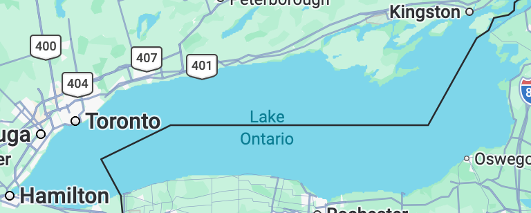

Here's some things I've done that have nothing to do with physics.
lake Ontario reverter
I wrote a Firefox add-on to change "Lake America" back to "Lake Ontario" on Google Maps. If you're located in the US, American place names are displayed by default. This extension works by changing the geographic location setting to Canada, so that Canadian place names are displayed.

trivia
j-play
I really like the game show Jeopardy!, and I am a big fan of the j-play Chrome extension, which allows you to play Jeopardy! games off of the j-archive. I was disappointed that the extension was only available on Chrome, so I ported it to Firefox:
trivia trainer
I also like Trivia Trainer, which allows you to go through old Jeopardy! questions by category. The website has no built-in support for keyboard shortcuts, so I wrote a userscript for this purpose. Here's the code on my GitHub.
As I've written it you can show or hide the answer with the up arrow or the T key, and use the other arrow keys to click the "correct", "incorrect", and "don't know" buttons. But it's easy to customize it to use whatever keys you like.
ear training
I wrote a short Python script to help me with my ear training. Here's the code on my GitHub. Basically, it plays you some intervals and you try to guess what the intervals are.
I think it's pretty easy to use it by running it from the command line. You can easily customize it to use whatever intervals you like.